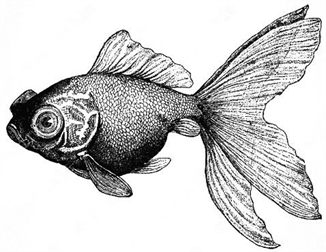

(bonheur)
ATARAXIE
"Il n'y a point d'ivresse égale à celle d'un homme qui a gagné un million et qui se prépare à le perdre. Celui qui arrivera à cette ataraxie en mouvement peut se vanter d'être au-dessus du sort." Alain
L'ataraxie se conjugue autour de la tranquillité, l'impassibilité d'une âme devenue maîtresse d'elle-même au prix de la sagesse acquise soit par la modération dans la recherche des plaisirs, soit par l'appréciation exacte de la valeur des choses, soit par la suspension du jugement. C'est alors "la bonne heure ", le bonheur!
Je suis tombé récemment sur un article d'un endocrinologue américain, Robert LUSTIG, qui présentait son dernier ouvrage. Dans celui-ci, il estime que le bonheur n’est pas la conséquence de l’accumulation du plaisir et que ce dernier pourrait même lui être nuisible. Et la raison en est assez simple : ces deux sensations dépendent en réalité de deux neurotransmetteurs distincts. La dopamine, à l'origine du plaisir, est vue comme une récompense, alors que la sérotonine, produit une sensation de bonheur plus durable. Forcément qu'étant spécialisé dans les addictions, cela a grandement ouvert mon intérêt en m'apercevant que cette approche dépasse la sphère addictive pour concerner pleinement le développement personnel. Le plaisir et le bonheur, si ils sont tantôt complémentaires tantôt antinomiques, sont chimiques avant tout. La philosophie parle d'eudémonisme comme doctrine posant comme principe que le bonheur est le but de la vie humaine. Ce bonheur n'est pas perçu comme opposé à la raison, il en est la finalité naturelle.
Dans l'esprit commun, il y a bien souvent une confusion entre plaisir et bohneur. La définition du plaisir est un état de contentement que crée chez quelqu'un la satisfaction d'une tendance, d'un besoin ou d'un désir ou l'accomplissement d'une activité gratifiante. Pour le bonheur, c'est un état de complète satisfaction. Si le bonheur est un état de satisfaction complète caractérisé par sa stabilité et sa durabilité, il ne suffit pas de ressentir un bref contentement pour être heureux. Une joie intense n’est pas le bonheur. Un plaisir éphémère non plus. Le bonheur est un état global. Sa situation ressentie est stable, elle présente un équilibre et seul un élément extérieur pourrait la modifier. On le présente souvent comme le but le plus élevé de l’existence. Celui que tout homme cherche à atteindre, consciemment ou non. Être heureux est une expérience singulière, individuelle et humaine. Mon expérience de praticien au travers des histoires de vie de mes clients, me laisse à constater que cette quête grandit avec l'avancée dans l'existence. Le jeune adulte se nourrit d'avantage de plaisir car d'accès rapide et facile, amalgamant ainsi plaisir et bonheur.
La notion de bonheur est intimement liée au désir. Être heureux, ce serait réaliser tous ses désirs, ou du moins réaliser tous ses désirs importants. Derrière le terme désir, vous pouvez entendre ici la dimension de valeur. L’homme heureux accomplit les objectifs qu’il s’est fixé, ceux qui ont une valeur pour lui-même. Le bonheur est donc ancré dans l’individu, dans ses projets et ses représentations. La conception du bonheur de l’un ne sera pas celle de l’autre, entre autre car les priorités et les valeurs ne sont pas les mêmes d'un individu à l'autre.
Les utopies qui visent le bonheur de tous sont potentiellement dangereuses. Elles risquent d’imposer une vision réductrice et rigide de ce qu’est le bonheur et de produire l’inaccession de celui-ci. Vous avez peut être déjà eu dans votre entourage quelqu'un qui vous a expliqué le mode d'emploi du bonheur. Parfois c'est même les parents et s'ils sont bardés de bonnes intentions, je suis loin d'être convaincu qu'il y ait un manuel du bonheur. Parce que nous comprenons le monde d'une façon singulière, comment pouvoir envisager uniformiser l'état heureux ?
Le contenu du bonheur est donc indéterminé. Il n’y a pas d’accord sur des éléments particuliers et précis qui seraient constitutifs du bonheur. Pour exemple, la richesse, la beauté et le pouvoir ne font pas le bonheur (même si certains s'en persuadent). Aucun élément concret ne peut être mis en avant. Croire qu’il faille une Ferrari ou passer à la télé pour être heureux est une illusion. Prenons des cas concrets de réussites échues comme a pu nous démontrer la vie de DALIDA, Amy WINEHOUSE ou encore Marylin MONROE. Lorsqu’il y a un accord sur ce qui rend heureux, il ne porte que sur des éléments vagues, des principes généraux. L’amour, l’amitié, la santé sont sûrement des composantes du bonheur. Mais ces éléments sont profondément abstraits. Savoir que l’amitié compte ne me donne pas de bons et vrais amis.
Je suis tombé récemment sur un article d'un endocrinologue américain, Robert LUSTIG, qui présentait son dernier ouvrage. Dans celui-ci, il estime que le bonheur n’est pas la conséquence de l’accumulation du plaisir et que ce dernier pourrait même lui être nuisible. Et la raison en est assez simple : ces deux sensations dépendent en réalité de deux neurotransmetteurs distincts. La dopamine, à l'origine du plaisir, est vue comme une récompense, alors que la sérotonine, produit une sensation de bonheur plus durable. Forcément qu'étant spécialisé dans les addictions, cela a grandement ouvert mon intérêt en m'apercevant que cette approche dépasse la sphère addictive pour concerner pleinement le développement personnel. Le plaisir et le bonheur, si ils sont tantôt complémentaires tantôt antinomiques, sont chimiques avant tout. La philosophie parle d'eudémonisme comme doctrine posant comme principe que le bonheur est le but de la vie humaine. Ce bonheur n'est pas perçu comme opposé à la raison, il en est la finalité naturelle.
Dans l'esprit commun, il y a bien souvent une confusion entre plaisir et bohneur. La définition du plaisir est un état de contentement que crée chez quelqu'un la satisfaction d'une tendance, d'un besoin ou d'un désir ou l'accomplissement d'une activité gratifiante. Pour le bonheur, c'est un état de complète satisfaction. Si le bonheur est un état de satisfaction complète caractérisé par sa stabilité et sa durabilité, il ne suffit pas de ressentir un bref contentement pour être heureux. Une joie intense n’est pas le bonheur. Un plaisir éphémère non plus. Le bonheur est un état global. Sa situation ressentie est stable, elle présente un équilibre et seul un élément extérieur pourrait la modifier. On le présente souvent comme le but le plus élevé de l’existence. Celui que tout homme cherche à atteindre, consciemment ou non. Être heureux est une expérience singulière, individuelle et humaine. Mon expérience de praticien au travers des histoires de vie de mes clients, me laisse à constater que cette quête grandit avec l'avancée dans l'existence. Le jeune adulte se nourrit d'avantage de plaisir car d'accès rapide et facile, amalgamant ainsi plaisir et bonheur.
La notion de bonheur est intimement liée au désir. Être heureux, ce serait réaliser tous ses désirs, ou du moins réaliser tous ses désirs importants. Derrière le terme désir, vous pouvez entendre ici la dimension de valeur. L’homme heureux accomplit les objectifs qu’il s’est fixé, ceux qui ont une valeur pour lui-même. Le bonheur est donc ancré dans l’individu, dans ses projets et ses représentations. La conception du bonheur de l’un ne sera pas celle de l’autre, entre autre car les priorités et les valeurs ne sont pas les mêmes d'un individu à l'autre.
Les utopies qui visent le bonheur de tous sont potentiellement dangereuses. Elles risquent d’imposer une vision réductrice et rigide de ce qu’est le bonheur et de produire l’inaccession de celui-ci. Vous avez peut être déjà eu dans votre entourage quelqu'un qui vous a expliqué le mode d'emploi du bonheur. Parfois c'est même les parents et s'ils sont bardés de bonnes intentions, je suis loin d'être convaincu qu'il y ait un manuel du bonheur. Parce que nous comprenons le monde d'une façon singulière, comment pouvoir envisager uniformiser l'état heureux ?
Le contenu du bonheur est donc indéterminé. Il n’y a pas d’accord sur des éléments particuliers et précis qui seraient constitutifs du bonheur. Pour exemple, la richesse, la beauté et le pouvoir ne font pas le bonheur (même si certains s'en persuadent). Aucun élément concret ne peut être mis en avant. Croire qu’il faille une Ferrari ou passer à la télé pour être heureux est une illusion. Prenons des cas concrets de réussites échues comme a pu nous démontrer la vie de DALIDA, Amy WINEHOUSE ou encore Marylin MONROE. Lorsqu’il y a un accord sur ce qui rend heureux, il ne porte que sur des éléments vagues, des principes généraux. L’amour, l’amitié, la santé sont sûrement des composantes du bonheur. Mais ces éléments sont profondément abstraits. Savoir que l’amitié compte ne me donne pas de bons et vrais amis.

On pose en général le bonheur comme le graal suprême de l’existence humaine. Le bonheur serait la fin en-soi vis-à-vis de laquelle tous nos autres buts seraient seconds. Toutes nos actions seraient faites en vue d’être heureux, de façon plus ou moins directe. Sous ce regard, sa recherche semble inévitable. Qu’on l’admette ou pas, le bonheur serait impossible à ne pas rechercher. C'est un état conscient. L’individu heureux est souvent présenté comme conscient de son état. Il n’est pas heureux sans le savoir. Il est heureux et se sait l’être.
D’un coté, le plaisir est dit insatiable, sans fin, source de trouble et permanent chez l’homme. De l’autre, on présente le bonheur comme une réalisation de tous les désirs et la disparition des troubles liés au plaisir. Ainsi soit l’homme désire, est en quête permanent de plaisir et il n’est pas heureux. Soit il est heureux, et il ne désire plus. Le bonheur va avec l’accomplissement de tous les désirs : c’est un état où l’homme est libéré du plaisir qui fait office de leurre.
On peut considérer que l’individu joue un rôle dans son propre bonheur. Il recherche activement son bonheur et tente de le réaliser en mettant en oeuvre des moyens en vue de cette fin. Des éléments extérieurs peuvent favoriser ou empêcher ce bonheur, mais ils ne sont pas pensés comme des causes initiales et exclusives. Lorsque le bonheur est entravé alors l'homme abuse de plaisirs compensateurs. Mais rien ne remplace la notion du bonheur, pas même le plaisir !
La morale est en lien étroit avec la notion d'être heureux. Nombre de philosophes ont fait de la moralité une condition du bonheur. Être heureux n’est donné qu’à celui qui est d’abord moral, même si la morale est subjective. L’idée de bonheur est rattachée à une forme de quiétude qui semble incompatible avec l’immoralité. La morale est étroitement liée à nos valeurs, ce qui fait que lorsqu'on est en conflit de valeurs, il en résulte des sentiments comme la culpabilité ou le remord qui entravent la possibilité du sentiment heureux. Puis on imagine mal le bonheur sans plaisir.
Toutefois. Le plaisir n’est pas le bonheur. C’est un sentiment momentané, éphémère qui renvoie au "bon" alors que le bonheur renvoie au "bien" . On peut tirer du plaisir d’une chose immorale, mais pas du bonheur. Le bonheur a une dimension d’accomplissement moral. Le plaisir est de courte durée alors que le bonheur dure. Le plaisir est viscéral alors que le bonheur est éthéré. Le plaisir peut être obtenu par des substances, pas le bonheur. Le plaisir est forcément vécu seul, non le bonheur. Chimiquement, le plaisir c'est la dopamine, ce neuromédiateur excitateur qui influence les addictions, le bonheur c'est la sérotonine, ce neuromédiateur inhibiteur qui régule nos humeurs. Le plaisir c'est le sentiment que c'est bon et j'en reveux encore. Le bonheur (ou le contentement) c'est le sentiment que c'est bien et j'en ai pas besoin de plus. Le bonheur implique alors la connexion interpersonnelle (empathie) et favorise la participation et la contribution. Le plaisir, non !
D’un coté, le plaisir est dit insatiable, sans fin, source de trouble et permanent chez l’homme. De l’autre, on présente le bonheur comme une réalisation de tous les désirs et la disparition des troubles liés au plaisir. Ainsi soit l’homme désire, est en quête permanent de plaisir et il n’est pas heureux. Soit il est heureux, et il ne désire plus. Le bonheur va avec l’accomplissement de tous les désirs : c’est un état où l’homme est libéré du plaisir qui fait office de leurre.
On peut considérer que l’individu joue un rôle dans son propre bonheur. Il recherche activement son bonheur et tente de le réaliser en mettant en oeuvre des moyens en vue de cette fin. Des éléments extérieurs peuvent favoriser ou empêcher ce bonheur, mais ils ne sont pas pensés comme des causes initiales et exclusives. Lorsque le bonheur est entravé alors l'homme abuse de plaisirs compensateurs. Mais rien ne remplace la notion du bonheur, pas même le plaisir !
La morale est en lien étroit avec la notion d'être heureux. Nombre de philosophes ont fait de la moralité une condition du bonheur. Être heureux n’est donné qu’à celui qui est d’abord moral, même si la morale est subjective. L’idée de bonheur est rattachée à une forme de quiétude qui semble incompatible avec l’immoralité. La morale est étroitement liée à nos valeurs, ce qui fait que lorsqu'on est en conflit de valeurs, il en résulte des sentiments comme la culpabilité ou le remord qui entravent la possibilité du sentiment heureux. Puis on imagine mal le bonheur sans plaisir.
Toutefois. Le plaisir n’est pas le bonheur. C’est un sentiment momentané, éphémère qui renvoie au "bon" alors que le bonheur renvoie au "bien" . On peut tirer du plaisir d’une chose immorale, mais pas du bonheur. Le bonheur a une dimension d’accomplissement moral. Le plaisir est de courte durée alors que le bonheur dure. Le plaisir est viscéral alors que le bonheur est éthéré. Le plaisir peut être obtenu par des substances, pas le bonheur. Le plaisir est forcément vécu seul, non le bonheur. Chimiquement, le plaisir c'est la dopamine, ce neuromédiateur excitateur qui influence les addictions, le bonheur c'est la sérotonine, ce neuromédiateur inhibiteur qui régule nos humeurs. Le plaisir c'est le sentiment que c'est bon et j'en reveux encore. Le bonheur (ou le contentement) c'est le sentiment que c'est bien et j'en ai pas besoin de plus. Le bonheur implique alors la connexion interpersonnelle (empathie) et favorise la participation et la contribution. Le plaisir, non !
EN RELATION

RESTEZ ALLEZ BIEN!
VALEUR
AUTHENTICITE
VISION
PROJET